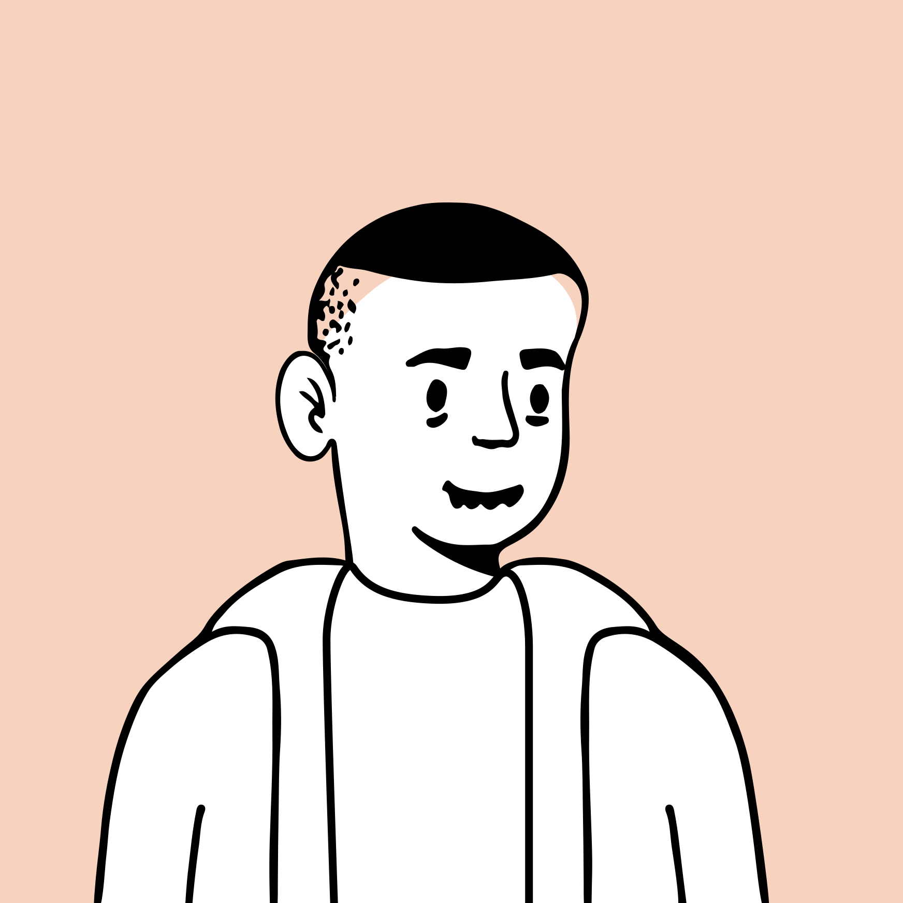
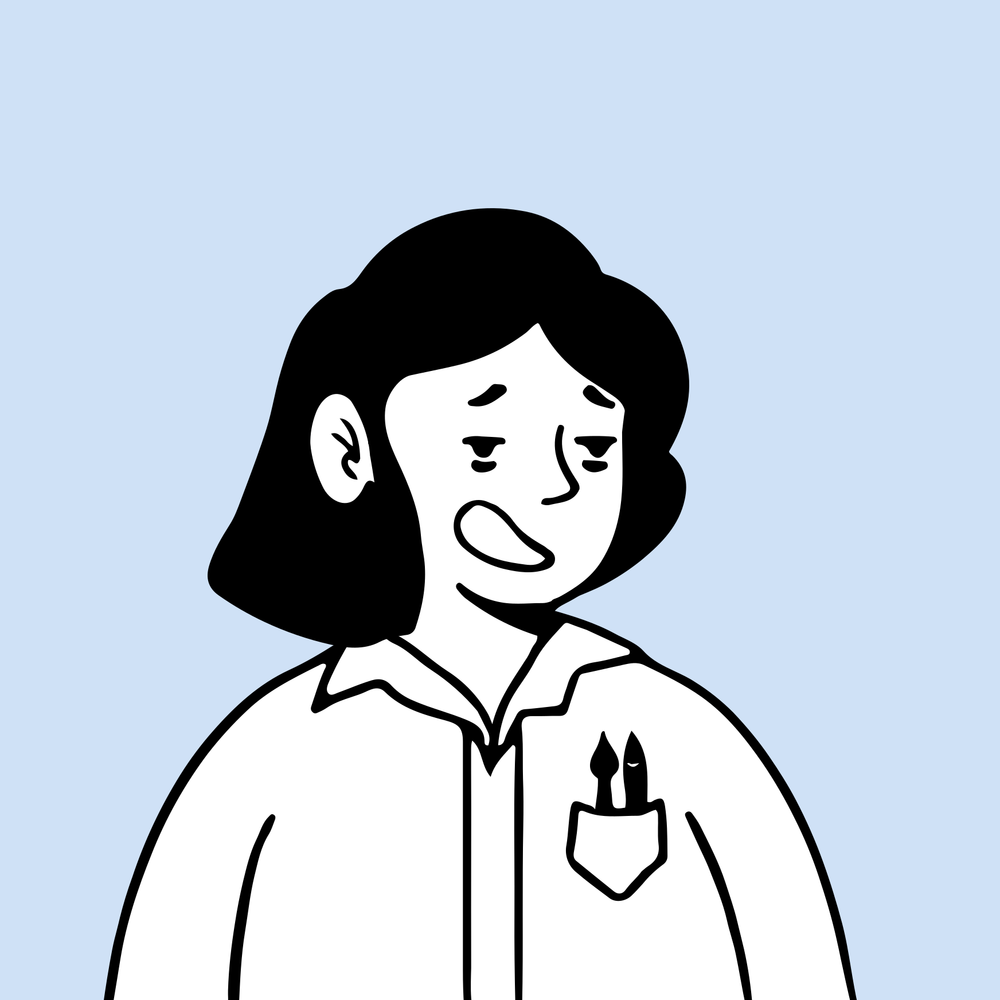

Strata
An AI that rebuilds a program it is not allowed to read — and proves the rebuild behaves the same.
Software outlives its source code.
of classic video games are no longer available to buy.
Devices die with their company: Spotify Car Thing, Revolv, Insteon.
DARPA's TRACTOR program exists to move legacy code to safe languages.
LLMs guess. Guesses look like working code.
"solved" patches from top agents on SWE-bench Verified are actually wrong.
Decompiled code compiles 99% of the time, but behaves correctly only 32–42%.
On a famous program, a model can recite the answer instead of discovering it.
An original card game the AI has never seen.
“Pressure”: play cards, push a shared meter, don't be the one who overloads it. Hidden state, chained effects, randomness — like a real legacy system, small enough for one day.



Player 1
Player 2

Dig. Guess. Test. Rebuild. Prove.
Reads the manual and partial code into low-trust claims. Ranks what to investigate.
Muse · SubQTests every claim against recorded games. Contradictions become findings.
codeRuns designed experiments on the live binary. Predicts first, logs surprises.
SubQ picks the experimentProposes rules as code, scores them on held-out games, confirms or refutes.
Muse proposes · code scoresWrites a JavaScript engine from Confirmed rules only.
Muse · sandboxedReplays and fuzzes both versions side by side. Accept or block.
code only, no modelModels propose. Code decides.
Equivalence you can check.
- Replay every recorded game on both versionsPython original vs. JavaScript rebuild, step by step
- Fuzz thousands of new scripted gamessame deck order for both, so results compare exactly
- Shrink any difference to the shortest failing gamesent back to the rebuilder as a counterexample
Two model families, neither one decides.
Hypotheses as executable rules, experiments, the JavaScript rebuild, the report.
384K-token decisions over all the evidence: next experiment, surprise triage, claim audit.
uAgents on Agentverse. Ask it in chat: “why do you think Jam does that?”
Scoring, replay, fuzzing, accept / block. AI code runs sandboxed, no keys, spending cap.
Watch it learn a game from scratch.
- The game screenthe AI plays thousands of games — cards fly, pressure rises, players get knocked out
- Behind the sceneswhat it saw, what it guesses, what it proved — in plain words
- The surprisethe manual says one thing, the evidence says another: a hidden mutation, caught
- The verdictrebuild accepted, and the planted mutations revealed next to the ones it found
Software that outlived its creator — rebuilt, with proof.
Next: real abandoned binaries, network protocols of bricked devices, and legacy code ports.